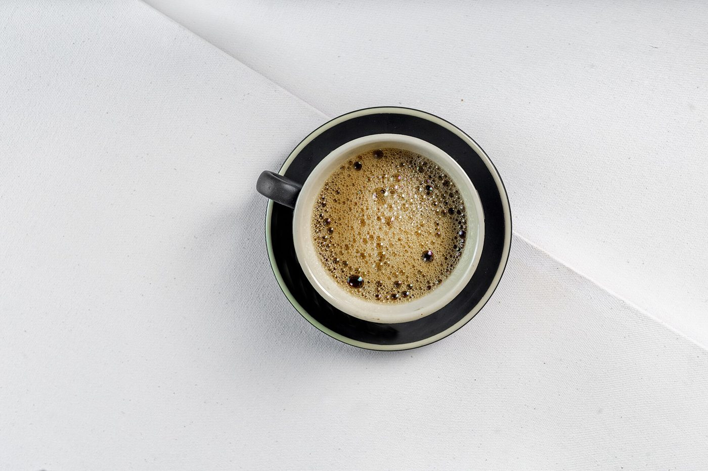
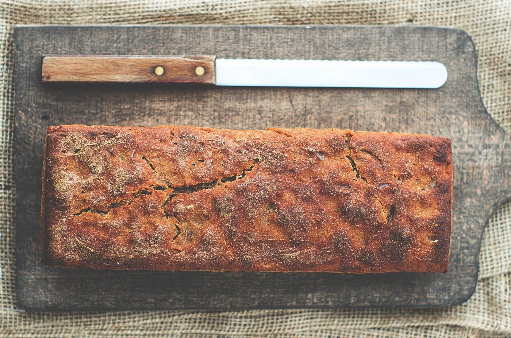

写真はコーヒーのイメージです。お店のものではありません。
制作側の連想
スクリューフィーダーの部位を、配置図にしてみる
このサイトは、らせん状の羽根で材料を送り出すスクリューフィーダーを図にしたつもりで作りました。六つの部位に番号をふり、上の図と並べています。制作側の連想で、お店の理念・由来とは無関係です。実際の機械の仕様を示すものでもありません。
凡例
六つの部位
- 1ホッパー材料を入れる、上のじょうご形の口。
- 2スクリュー(螺旋羽根)軸にらせん状の羽根を巻いた部品。回って材料を送り出します。
- 3トラフ(筒)スクリューを包む、横長の筒状の容器。
- 4駆動モータースクリューを回す動力のもと。
- 5減速機モーターの回転を落として、力強く伝える箱。
- 6排出口送られた材料が出ていく、下向きの口。


写真はパンのイメージです。お店のものではありません。
ギャラリー(イメージ)
コーヒーとパンの写真


写真はコーヒーやパンのイメージです。お店のものではなく、お店で提供している商品を示すものでもありません。
ご案内
お店のこと(確認できたものだけ)
| 所在地 | 〒520-1531 滋賀県高島市新旭町饗庭1599 |
|---|---|
| 電話 | 準備中 |
| 営業時間 | 準備中 |
| 定休日 | 準備中 |
| ご予約 | 準備中 |
| 駐車場 | 準備中 |
| SNS | Instagram @hullcat2218 |